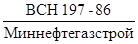

Ведомственные строительные нормы
ИНСТРУКЦИЯ ПО МЕЖОБЪЕКТНОЙ
ЭТАПНОЙ СПЕЦИАЛИЗАЦИИ РАБОТ
ПРИ СООРУЖЕНИИ ЛИНЕЙНОЙ ЧАСТИ
МАГИСТРАЛЬНЫХ ТРУБОПРОВОДОВ
ВСН 197-86
Миннефтегазстрой
МИНИСТЕРСТВО
СТРОИТЕЛЬСТВА ПРЕДПРИЯТИЙ
НЕФТЯНОЙ И ГАЗОВОЙ ПРОМЫШЛЕННОСТИ
ВСЕСОЮЗНЫЙ
НАУЧНО-ИССЛЕДОВАТЕЛЬСКИЙ ИНСТИТУТ
ПО СТРОИТЕЛЬСТВУ МАГИСТРАЛЬНЫХ ТРУБОПРОВОДОВ
Москва 1986
РАЗРАБОТАНЫ И ВНЕСЕНЫ
Всесоюзный научно-исследовательский институт по строительству магистральных трубопроводов (ВНИИСТ):
А.М. Зиневич - канд. техн. наук, директор института
М.П. Карпенко - д-р техн. наук, заведующий отделом
Р.Д. Габелая - канд. техн. наук, заведующий лабораторией
Л.В. Косарева - канд. техн. наук, заведующий лабораторией
В.С. Бортаковский - канд. техн. наук, ст. научн. сотрудник
Р.С. Гаспарянц - канд. техн. наук, ст. научн. сотрудник;
Главвостоктрубопроводстрой:
Р.М. Шакиров - д-р техн. наук, первый зам.начальника главка;
УКО НИПИоргнефтегазстрой.
Ф.Б. Аюпов - начальник УКО НИПИоргнефтегазстроя.
ПОДГОТОВЛЕНЫ К УТВЕРЖДЕНИЮ Главным техническим управлением Миннефтегазстроя
М.В. Машков - начальник отдела.
С
введением в действие «Инструкции по межобъектной этапной специализации работ
при сооружении линейной части магистральных трубопроводов» 
|
Министерство строительства предприятий нефтяной и газовой промышленности (Миннефтегазстрой) |
Ведомственные строительные нормы |
ВСН 197-86 |
|
|
Миннефтегазстрой |
|||
|
Инструкция по межобъектной этапной специализации работ при сооружении линейной части магистральных трубопроводов |
|||
|
Взамен Р 516-83 Р 530-84 |
1.1. Настоящая Инструкция предназначена для организации поточного строительства магистральных трубопроводов, в том числе многониточных систем, по непрерывному календарному графику с учетом очередности сооружения трубопроводов, которая была определена долгосрочными производственными программами.
1.2. Основными принципами поточности строительства трубопроводных объектов должны быть:
прямоточность (каждое строительное подразделение должно последовательно переходить с одного объекта на другой);
ритмичность (различные строительные подразделения должны осуществлять переход с объекта на объект в едином ритме).
Поточность строительства трубопроводных объектов подразумевает разделение труда между строительными подразделениями. Такое, разделение производится с применением прогрессивных форм этапной специализации строительных подразделений.
Строительные подразделения объединяются в крупные постоянные оперативные структуры - межобъектные потоки, одновременно работающие на двух или более трубопроводных объектах.
1.3. Создание межобъектного потока является необходимым условием существования и повышения производительности долговременных этапно специализированных подразделений потоков, что обеспечивает каждому из них заблаговременную подготовку поля деятельности и уменьшает до минимума непроизводительные затраты времени на их передислокацию, развертывание и свертывание.
1.4. При организации работы межобъектных потоков необходимо учесть присущую трубопроводному строительству специфику - перекрытие периодов строительства: подготовительного, основного и завершающего.
Практическое осуществление перекрытия периодов является организационным мероприятием, позволяющим сократить общую производительность строительства трубопроводного объекта.
|
Внесены ВНИИСТом |
Утверждены |
Срок введения |
2.1. Комплекс работ по сооружению линейной части магистральных трубопроводов разделяется на специализированные этапы, что позволяет технологически правильно распределять работы между исполнителями и координировать их совместную деятельность.
2.2. В линейном трубопроводном строительстве следует принимать следующие этапы:
I этап. Строительство жилых городков, баз, складов и подъездных дорог к ним.
При сооружении многониточных систем магистральных трубопроводов работы I этапа выполняются на первой нитке трубопровода, так как все построенные на этом этапе сооружения должны быть использованы для строительства последующих ниток.
II этап. Поворотная сварка труб в секции, заготовка кривых. В случае применения труб с заводской изоляцией на сварочной базе выполняется изоляция сварных стыков трубных секций.
III этап. Расчистка и планировка трассы, сооружение и содержание вдольтрассовых и подъездных дорог. На многониточной системе сооружается одна вдольтрассовая дорога, которая используется для строительства последующих ниток трубопровода.
IV этап. Вывозка и раскладка на трассе трубных секций, кривых, пригрузов.
V этап. Основные линейные работы.
К основным работам относятся: потолочная сварка трубных секций в нитку; разработка траншей; изоляция трубопровода, его укладка в проектное положение; закрепление трубопровода, засылка грунтом; рекультивация и очистка трассы. Параллельно с основными работами выполняются работы по сооружению средств электрохимзащиты и ЛЭП, а также технологической связи.
VI этап. Строительство инженерно-технологических объектов, к которым относятся: переходы дорог, оврагов и малых водотоков; переходы инженерных коммуникаций; сооружение узлов береговых гребенок и узлов приема и пуска скребка; монтаж узлов линейной и охранной запорной арматуры, узлов подключения КС и КС, а также перемычек; кривые вставки принудительного гнутья с углом поворота более 20°, участки трубопроводов, прокладываемых по рельефу с крутизной подъема и спуска более 12°.
VII этап. Очистка и маркировка трассы трубопровода, очистка полости, испытание трубопровода и заполнение его продуктом.
2.3. Принятые этапы должны выполняться в следующие периоды строительства трубопровода:
I этап - подготовительный период, внетрассовые подготовительные работы;
II, III, IV этапы - подготовительный период, вдольтрассовые подготовительные работы;
V, VI этапы - основной период;
VII этап - завершающий период.
3.1. Организационная структура межобъектного потока включает следующие основные подразделения этапной специализации:
комплексный технологический поток (КТП);
дорожно-транспортный поток (ДТП);
инженерно-технологический поток (ИТП).
Распределение подразделений по этапам показано в табл. 1.
3.2. Объединение этапно специализированных подразделений в межобъектный поток осуществляется на основе внутренних хозрасчетных отношений.
При этом генеральным подрядчиком является комплексный технологический поток, которому субподрядчики (дорожно-транспортный и инженерно-технологический поток) сдают законченные этапы работ.
3.3. В административном отношении структурные подразделения межобъектного потока подчинены:
комплексный технологический поток - непосредственно трубопроводостроительному тресту;
дорожно-транспортный поток - дорожно-транспортной передвижной механизированной колонне (ПМК) трубопроводостроительного треста;
инженерно-технологический поток - инженерно-технологической передвижной механизированной колонне (ПМК) трубопроводостроительного треста.
Таблица 1
|
Этапы строительства |
Этапно специализированные потоки |
|
|
Подготовительный период |
||
|
мобилизационный |
I. Строительство жилых городков, баз, складов, подземных дорог |
ДТП, КТП, ИТП |
|
подготовительно-технологический |
II. Поворотная сварка труб в секции |
ИТП |
|
III. Расчистка и планировка трассы, сооружение вдольтрассовых дорог |
ДТП |
|
|
IV. Вывозка трубных секций, кривых, вставок, пригрузов |
ДТП |
|
|
Основной |
V. Основные линейные работы |
КТП |
|
VI. Строительство инженерно-технологических объектов |
ИТП |
|
|
Завершающий |
VII. Очистка трассы, очистка полости и испытание трубопровода |
ИТП, КТП |
3.4. Кроме основных субподрядчиков (ДТП и ИТП), на подряде у комплексного технологического потока работают следующие подразделения:
при необходимости выполнения буро-взрывных работ - участок (поток) буро-взрывных работ, подчиненный специализированному управлению буровзрывных работ, который входит в состав главка;
участок по спецработам, выполняющий строительство отпаек ЛЭП протяженностью до 10 км, средств ЭХЗ, вертолетных площадок, домов линейных ремонтеров, а также общестроительные работы по радиорелейным линиям связи и телемеханики; он подчинен специализированному управлению по спецработам, входящему в состав треста;
автотранспортный участок, подчиненный автотранспортной конторе, входящей в состав треста;
звено хозрасчетного участка контроля качества, входящего в состав треста;
ремонтные участки: по обслуживанию и ремонту строймеханизмов - от управления механизации; по обслуживанию и ремонту автотранспорта - от автотранспортной конторы; по обслуживанию, и ремонту тяжелой импортной техники - от объединения Союзремонттрубопроводтехника.
Оперативная структура межобъектного потока показана на рис. 1, а административная структура - на рис. 2.
3.5. Комплексный технологический поток выполняет следующие завершающие работы:
разравнивание строительной полосы, уборку строительного мусора и временных сооружений;
строительство стеллажей и выкладку на стеллажи аварийного запаса труб;
разбивку пикетажа и установку километровых столбиков.
3.6. Работы по ликвидации технологических разрывов, связанные с сооружением инженерно-технологического объекта, возлагаются либо на бригады инженерно-технологического потока, ведущего строительство данного объекта, либо на комплексный технологический поток, в зависимости от того, который из них имеет более поздний срок прохождения данной точки трассы.
Ликвидация технологических разрывов после очистки полости трубопровода осуществляется инженерно-технологическим потоком.
3.7. Если при сооружении инженерно-технологических объектов согласно действующим СНиПам требуется проведение предварительных испытаний, то по результатам этих испытаний составляют акт, который подписывается представителями субподрядчика, генподрядчика и заказчика.
3.8. С учетом конструктивных особенностей инженерно-технологических объектов комплектация бригад ИТП может производиться по трем группам объектов:
объекты, включающие запорную арматуру (узлы подключения КС и НС, устройства приема-пуска скребков, береговые гребенки, перемычки, узлы линейной и охранной запорной арматуры);
переходы дорог;
переходы через овраги, малые водотоки, инженерные коммуникации, участки с пересечением рельефа и большим количеством кривых вставок.
Рис. 1. Оперативная структура межобъектного потока
Рис. 2. Административная структура подразделений межобъектного потока
3.9. Комплектование бригад инженерно-технологического потока, определение мест их базирования и границ работы производится с учетом мест расположения вышеуказанных объектов, трудоемкости их сооружения и условий ежедневной транспортировки рабочих от мест базирования до объектов.
Как правило, места базирования должны находиться вблизи наиболее трудоемких объектов, которыми обычно являются узлы подключения КС и НС.
В зону работы потока включаются объекты, доставка рабочих, к которым занимает время не более 1 - 1,5 ч в один конец. Допускается расширять зону работы инженерно-технологического потока е применением вахтового метода и использованием передвижных жилых городков.
3.10. При определении последовательности сооружения инженерно-технологических объектов на участке работы инженерно-технологического потока, количества технологических модулей и продолжительности сооружения каждого объекта необходимо руководствоваться следующими соображениями:
последовательность сооружения инженерно-технологических объектов по трассе трубопровода должна, как правило, совпадать с направлением движения комплексных технологических потоков;
объекты малой трудоемкости должны сооружаться одним модулем; должно быть сведено к минимуму переключение модулей с объекта на объект для уменьшения транспортных и временных затрат по передислокации модулей;
технологическими модулями по сооружению переходов дорог, оврагов и инженерных коммуникаций должны сооружаться объекты этого типа и только после их завершения модули могут переключаться на сооружение объектов, включающих запорную арматуру;
при прочих равных условиях в первую очередь должны сооружаться труднодоступные объекты малой трудоемкости и в последнюю очередь объекты большой трудоемкости, находящиеся вблизи места базирования потока.
3.11. Оценка деятельности и оплата работы всех этапно специализированных подразделений должна производиться по конечной продукции, которой является товарная строительная продукция, завершающая каждый этап.
4.1. Межобъектный поток ведет строительные работы одновременно на двух или более трубопроводных объектах в пределах отведенных ему участков. Схема работы межобъектного потока и составляющих его этапно специализированных потоков приведена на рис. 3.
4.2. Принцип организации работы комплексного технологического потока (КТП), выполняющего наибольший объем работ, должен предусматривать наиболее полное его использование: после окончания линейных работ на одном трубопроводном объекте КТП должен немедленно приступать к строительству следующего объекта.
Этот же принцип должен быть использован для организации работы тех подразделений инженерно-технологического потока (ИТП), которые строят сложные инженерные сооружения по трассе трубопровода (инженерно-технологические объекты), а также подразделений, сооружающих устройства электрохимзащиты, ЛЭП, линий связи.
4.3. Для обеспечения непрерывной работы КТП и ИТП к моменту окончания их передислокации на новый объект на нем должен быть полностью закончен мобилизационный период и выполнены первоочередные вдольтрассовые подготовительные работы.
4.4. Чтобы обеспечить необходимую мобильность этапно специализированных потоков, их следует снабдить дополнительными комплектами оборудования для жилых городков, баз, складов. Мобилизационный период на новом объекте должен быть начат в то время, когда на предыдущем объекте еще продолжаются основные работы.
Это не относится к строительству трубопроводов в энергетическом коридоре, где имеются постоянно эксплуатируемые жилые городки, базы, склады и дороги.
4.5. Первыми обустройство жилых городков, баз, складов на новом объекте должны начинать подразделения дорожно-транспортного потока (ДТП), которые к подходу подразделений других потоков сооружают подъездные дороги.
Рис. 3. Схема работы межобъектного потока
Основные подразделения ДТП (расчистка и планировка трассы, транспортные работы) должны начинать и заканчивать свои работы до начала работ подразделениями КТП и ИТП с периодом, равным периоду выполнения первоочередных подготовительных работ. По окончании подготовительных работ на объекте основные подразделения ДТП сразу же передислоцируются на новый объект, оставляя мощности только для содержания дорог до окончания основного периода.
Схема работы дорожно-транспортного потока приведена на рис. 4.
4.6. Комплексный технологический поток работает в основном периоде строительства. Если по окончании основного периода остаются не выполненными работы по очистке трассы, то выделяется бригада для их завершения, а главные силы КТП должны перебазироваться на новый объект немедленно после окончания основного периода на предыдущем объекте.
Схема работы комплексного технологического потока приведена на рис. 5.
4.7. Подразделения инженерно-технологического потока, строящие инженерно-технологические объекты, выполняют работы в основном периоде. До его окончания параллельно с ними начинают работать подразделения, выполнявшие очистку полости и испытание трубопровода по законченным участкам. Эти подразделения продолжают работать после передислокации основных подразделений ИТП на новый объект и остаются на предыдущем объекте до его приемки в эксплуатацию.
Подразделения, монтирующие сварочные базы и выполняющие поворотную сварку труб в секции, работают по такому же графику, как и другие подразделения ИТП.
Схема работы инженерно-технологического потока приведена на рис. 6.
4.8. Ритм работы межобъектного потока определяет продолжительность основного периода строительства на каждом трубопроводном объекте. Чтобы реализовать главное преимущество поточного строительства, заключающееся в простоте управления производственным процессом, необходимо добиться его ритмичности, т.е. равной с основным периодом продолжительности завершающего и подготовительного периодов (с учетом их перекрытия с основным периодом). Тогда каждое из подразделений объектно-специализированных потоков будет работать непрерывно, и состав подразделений в межобъектном потоке будет постоянным.
Рис. 4. Схема работы дорожно-транспортного потока
Рис. 5. Схема работы комплексного технологического потока
Рис. 6. Схема работы инженерно-технологического потока
Если полной ритмичности добиться нельзя, то возможен вариант работы межобъектного потока с обменом ресурсами между соответствующими ПМК. При этом постоянно в составе межобъектного потока остаются подразделения, выполняющие основные работы.
4.9. При сооружении трубопроводного объекта большой протяженности используются несколько межобъектных потоков. Для сокращения продолжительности строительства такого объекта следует стремиться к совмещению их работы - одновременному началу и окончанию.
4.10. При подготовке строительного производства с применением мёжобъектных потоков, в частности, при разработке проектов организации работ на годовую и перспективную программы строительной организации необходимо выполнять расчеты: по синхронизации работы этапно специализированных потоков и их подразделений (выравниванию их производительностей); по протяженности участков трубопроводов, выделяемых потоку на различных объектах (должна учитываться трудоемкость строительства для достижения единого ритма); по определению ресурсооснащения потоков с учетом географических факторов, в том числе оснащения оборудованием, для жилых городков, баз и складов.
5.1. Важным условием бесперебойной работы всех подразделений межобъектного потока является создание этапных заделов, позволяющих компенсировать разницу производительностей технологических операций, возникающую под влиянием географических и климатических факторов.
5.2. Этапные заделы представляют собой дополнительные объемы работ по этапам строительства трубопроводов, необходимые для обеспечения равномерного продвижения межобъектного потока по строящимся объектам в течение года или нескольких лет. Различаются два вида этапных заделов, технологические заделы и сезонные заделы.
5.3. Технологические заделы создаются, чтобы поглотить неравномерности производительности технологических операций, обусловленные стохастическим характером строительного процесса, и не допустить простоев строительных подразделений из-за отсутствия поля работ. Числовые значения минимальных технологических заделов приведены в табл. 2.
Таблица 2
|
Этапы строительства трубопровода |
Минимальные значения технологического задела для местности, км |
|||
|
Предшествующие |
Последующие |
равнинной |
пересеченной |
гористой |
|
II. Поворотная сварка труб в секции |
IV. Вывозка трубных секций |
30 |
20 |
15 |
|
III. Расчистка и планировка |
IV. Вывозка трубных секций |
25 |
15 |
10 |
|
IV. Вывозка трубных секций |
V. Основные линейные работы |
15 |
10 |
10 |
|
V. Основные линейные работы |
VII. Очистка полости, испытание трубопровода |
60 |
60 |
60 |
5.4. Сезонные заделы создаются в течение благоприятного строительного сезона, чтобы компенсировать уменьшение производительности строительных подразделений в неблагоприятные сезоны. Продолжительность влияния сезонного задела на строительный процесс должна быть не менее одного года.
5.5. На различные этапы строительного производства сезонные условия выполнения работ влияют в разной степени. Такое влияние в основном связано с осадками, температурами воздуха, несущей способностью грунта и соответствующей проходимостью строительных и транспортных машин. Для учета такого влияния все работы, выполняющиеся поэтапно, разделяются на три группы:
первая группа работ выполняется во все сезоны с постоянной производительностью (I этап - строительство жилых городков, баз, складов; II этап - поворотная сварка труб в секции; VII этап - очистка полости и испытание трубопровода);
вторая группа работ выполняется c уменьшенной производительностью в сезоны весенней и осенней распутиц, а в сильно заболоченной местности также и в летний сезон (III этап - расчистка и планировка трассы; V этап - основные линейные работы; VI этап - строительство инженерно-технологических объектов);
третья группа работ не выполняется в сезоны весенней и осенней распутиц, а в сильно заболоченной местности также и в летний сезон (IV этап - вывозка на трассу трубных секций, кривых, пригрузов).
5.6. Величины сезонных заделов по группам работ определяются инженерным расчетом с учетом природно-климатических условий районов строительства конкретных участков трасс трубопроводов и производительностей строительных подразделений по группам работ в различные сезоны года. В основу расчета должен быть заложен принцип обеспечения непрерывного функционирования подразделений, выполняющих основные работы (V и VI этапы).
5.7. Расчет мощностей, необходимых производительностей строительных подразделений по группам работ должен выполняться с учетом создания ими этапных заделов.
СОДЕРЖАНИЕ
|
2. Этапная специализация работ. 3 3. Структура межобъектного потока на основе этапной специализации. 3 |